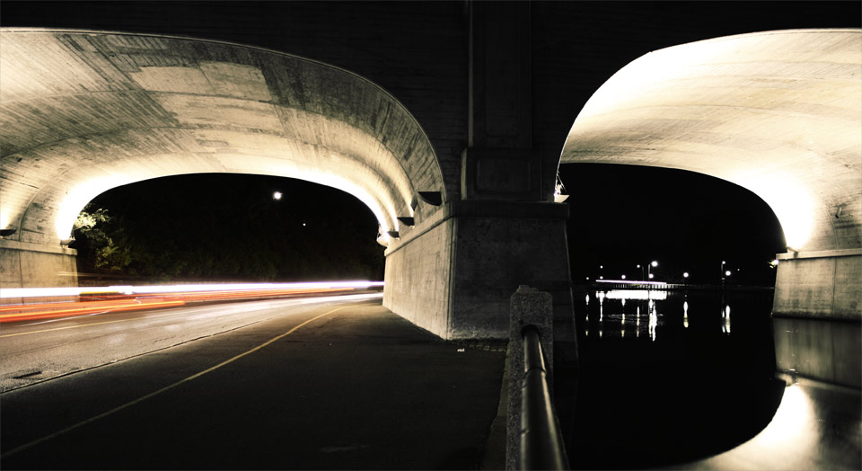
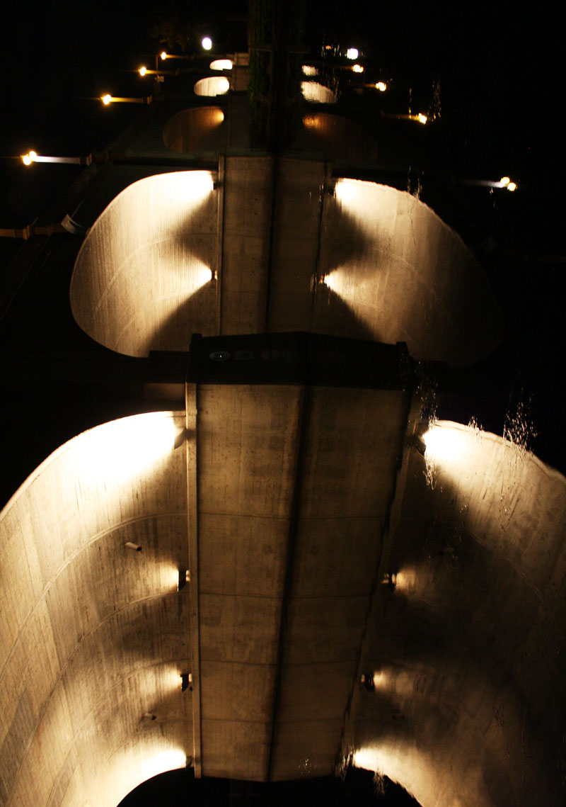
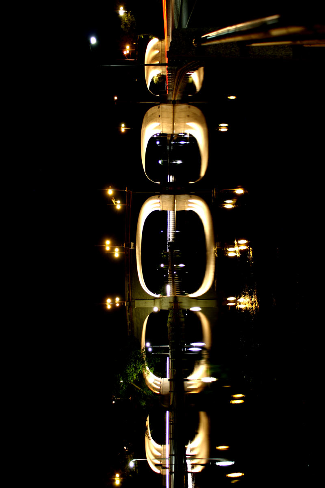
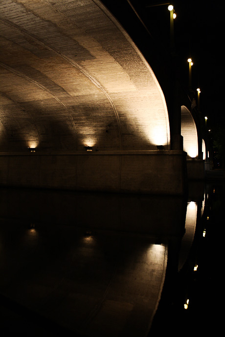
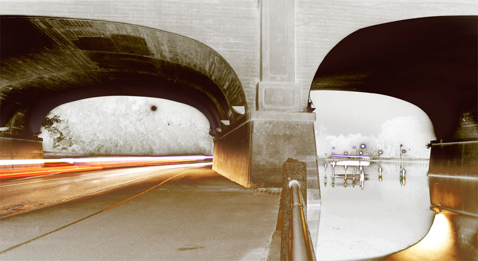
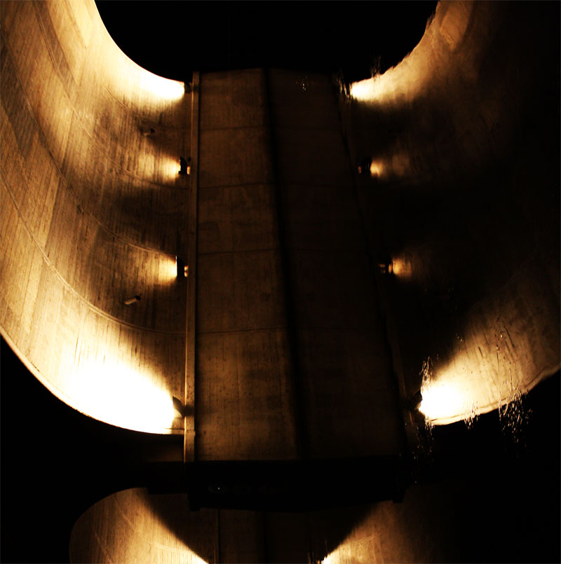

- Long Exposure of Traffic Under Bridge
- I left the shutter on for about 6 seconds here trying to balance myself on a spider infested pillar. Originally I was inspired by my friend who is looking to buy an infrared lens.
I tried to replicate the effect in photoshop, but I also liked it in colour. Above is the touched up original Picture.

- Futuristic and Yet Retro Building
- After flipping the first couple of pictures around this one really stood out to me. The water was almost completely still so the reflection makes for one very interesting structure.

- Rotated and Abstract
- At first I shot a distance shot of the bridge with a long exposure. I waited for cars to go by on both sides to try to get a trailing effect. Flipped horizontally it looks like it would be quite nice on a wall.

- Colonel By Portrait
- I just liked this how this one turned out. The light reflecting off water is always neat to look at.

- Infrared Lens Photoshop Blending Attempt
- I always try a few things with abstract photography. Black and white, and inverted black and white. Inverted black and white was the base for trying to replicate an infrared lens effect. The rest was punching out the colours.
Back up to original picture

...Batman?
Free Responsive HTML5 Photography Template
Licence: Whatever you want. I just hope you like the pictures and my responsive css.